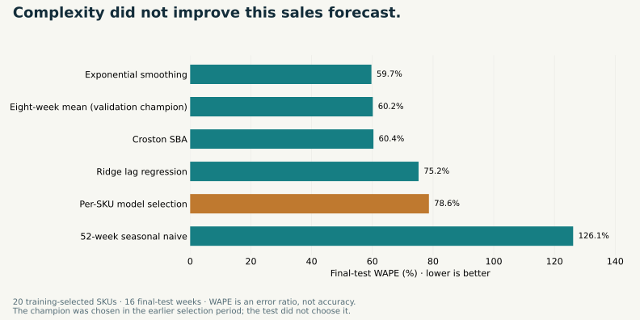
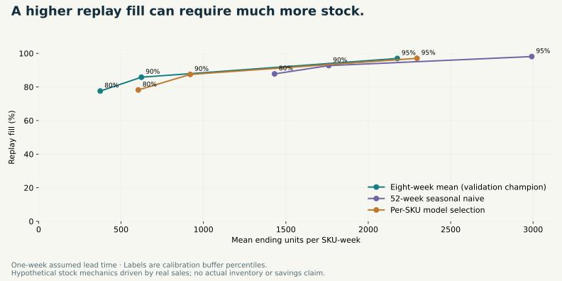

← Back to selected work
Commercial data science · Forecasting · Operational decisions
Demand Forecasting & Inventory Optimisation
From recorded sales to replenishment trade-offs. A real-data forecasting workflow that separates model selection, error calibration and later evaluation, then shows what explicit stock-policy assumptions change.
The operational question
A forecast should be evaluated alongside the stock decision it informs.
Retail planning must manage both forecast error and the cost of carrying too much or too little stock. This project builds a reproducible bridge between historical sales forecasting and replenishment-policy comparison, with every assumption visible.
The source is UCI Online Retail II: real transactions from a historical UK giftware retailer, with many wholesale customers. Recorded sales are a demand proxy; the dataset does not contain actual stock, supplier lead times, unit costs or unobserved lost demand.
Chronological design
Selection, calibration and testing have different jobs.
The first 64 complete weeks define SKU eligibility and initial training. The next 12 weeks select models; the following 12 calibrate errors. The final 16 weeks evaluate forecasts and stock-policy scenarios.
Every origin uses strictly prior observations. Forecasts span four weeks, with non-overlapping origins for reported selection/calibration/test evidence. Choices stay fixed while models refit on newly observed history. No random split mixes past and future.
The 20 products were selected by initial-training unit volume among established, active SKUs. They account for 12.37% of retained initial-training units. A product with zero test-period sales remains included; future survival does not determine the cohort.
Forecast evidence
The simple validation champion generalizes better than per-SKU selection.

The recent eight-week mean wins the earlier global selection comparison and records final-test WAPE of 60.16%. Per-SKU selection records 78.64%. Exponential smoothing has the lowest observed test error at 59.70%, but the test is not used retrospectively to replace the chosen champion.
WAPE is an error ratio, not accuracy. Wholesale bursts and changing product activity create large errors. The result demonstrates why credible benchmarks and chronological evaluation matter as much as model complexity.
Calibrated uncertainty
A percentile setting is not a performance guarantee.
Each protection horizon uses 60 SKU-origin calibration windows. Errors are normalized by initial-training SKU means, then pooled to form positive-error stock buffers and horizon-specific empirical forecast bands.
Four-week aggregate bands for the per-SKU approach cover 86.25% of final-test windows despite a 90th-percentile calibration setting. Product dependence and only three calibration calendar origins limit interpretation; no distribution-free coverage claim is made.
Stock-policy laboratory
More replay fulfilment can mean much more inventory.

At a one-week assumed lead time and a 90th-percentile buffer, the eight-week mean replays 85.81% fill with mean ending stock of 623.63 units per SKU-week. Per-SKU selection replays 87.47% with 919.75 units; seasonal naive replays 92.72% with 1,760.29 units.
These are hypothetical stock mechanics driven by real sales. They are not actual retailer service levels, verified lost demand or savings. Costs and supplier constraints are absent, so a higher fill result alone cannot establish an economic optimum.
The interactive product
Inspect a product, a forecast and every stock movement.
Sales and forecasts: explore all 20 products, compare recorded units to final-test forecasts and inspect the historical-cut-off demonstration forecast.
Model evidence: compare five fixed candidates, the validation champion and per-SKU choices through MAE, WAPE, bias and initial-training-scaled MASE.
Policy laboratory: compare forecast rules, assumed lead times and buffer percentiles; inspect fulfilment-versus-stock trade-offs for the whole cohort or one product.
Stock-flow audit: export arrivals, orders, on-hand balances, pipeline and unmet proxy units for a chosen scenario. SQL summaries reconcile to the complete traces.
Boundaries and implementation
The next operational step needs evidence the source does not contain.
Actual inventory position, stockout history, lead-time variability, purchase/holding/shortage costs, supplier capacities and promotion information are required before deployment. The scenario's weekly review, initial stock, deterministic lead times and lost-sales treatment are assumptions.
Zero recorded sales are not verified zero demand. Negative quantities and cancellations are excluded, not treated as observed stock returns. Exact duplicates are retained because their validity is unresolved. The historical UK cohort does not establish present-day or Nigerian retail performance.
Reproducibility
Follow the evidence from the archive to the policy trace.
The project includes source checksums, a sequential cleaning audit, initial-training cohort evidence, all rolling forecasts, calibration residuals, model scores, stock-flow trajectories, SQL reports and authentic analysis figures. Eight checks cover chronology, forecast reproduction, model choice, calibration, stock conservation, SQL and dashboard interactions.
Source: Chen, D. (2012), Online Retail II, UCI Machine Learning Repository, DOI 10.24432/C5CG6D. Source and derived data are licensed CC BY 4.0. Customer identifiers are not used or included.
Inspect and reproduce
Forecasting with its decisions and limitations visible.
Explore the full Python and SQL workflow, historical evidence, dashboard source and replenishment-policy traces.